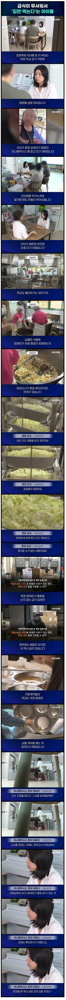

일본은 엄마가 애들 도시락에 남편도시락까지 수십년을 싸는데. 맞벌이여도 그렇게 하는데 그걸 못하겠다는건가?
이해가 안되네
자식 생명<<<<<내 귀찮음 결국 이거지
알아서 학교가 다 해줘라
전형적인 한국인마인드
힘들어서 못하겠으면 돈으로 사서라도 해야지 걍 학교에 짬때리는거 옹호하는 병신들도 있고 세상 참 편히사네 ㄹㅇㅋㅋ
자식이든 배우자든 도시락이 발작버튼ㅋㅋ 개같이 긁히는나라임 ㅋㅋ
이건 어쩔 수 없음
집에서 도시락 싸주는 거 말곤 방법이 없다
학생 한 명한테 맞춰서 하기엔 리스크가 너무 큼
학생 본인이 알아서 걸러먹던가, 약을 달고 살던가 해야돼
돈벌어서 노름하는데 다 쓰냐? 자식한테 안쓸거면 맞벌이는 왜 해? 일때매 시간없어서 못한다할거면 돈이라도 써야지 지 애새끼 키우는데도 쌀숭이마냥 키우노ㅋㅋ
애새끼 학원비 교육비에 허리가 휜다그러면 멋진엄마지만 자식새끼 병치레에 돈쓴다고 하면 존나없어보이니까
저런학생 입학하면 따로라도 메뉴 만들어주는게 맞지. 막말로 바나나에 빵한봉지로 구성된 븅신 메뉴라도 따로 빼줘야함. 그럼 부모가 도시락 쌀지 안쌀지가 선택하면되고
글쎄 그게 현실적으로 가능할까..
대량 조리를 위한 조리실에서 한 끼분만 만드는 건 생각보다 어려울 것 같은데.. 조리사도 한 명 빠져야 하고, 조리 공간이며 도구도 따로 있어야하고.. 무엇보다 학교에 저런 특성을 지닌 학생이 한 명일 가능성보단 그렇지 않을 가능성이 더 높고, 그 개개인마다 다 맞춤형으로 급식을 제공하기 난이도는 후덜덜 할 것 같음.
무엇보다 요즘엔 식자재를 지자체별로 급식지원센터 이런 걸 만들어서 납품받고 공급하는데 그 외에 따로 식재료 개별 구입이 가능한지도 따져봐야할듯(식중독 때문에)
따로 메뉴가 있어야 한다는게 원칙이고 현실적 방법이 알러지 유발 확인된 빵같은거 얘기한거임. 저 영양사는 맨밥에 김 제시한거고. 이걸 더 개선해달라는 요구는 부모입장에서 할수도 있으나 선택은 개인준비vs맨밥에김 이 되야지 전체급식을 수정할 수 없단 얘기임
귀찮아서 김만 주진 않았겠지
우리가 알 수 없는 여러 요인들이 있을거라 봄
그리고 사례의 환아는 견과류 알러지가 심한 케이스인데 반대로 견과류가 들어가지 않은 음식은 섭취 가능한 상황임
문제는 제조 공장에서 혼입되는 경우까진 필터링을 못한다인거고 그로 인해 반찬이 없으면 김이라도 주겠다....
나름대로 최선을 다 한 것 같은데?
빵에 우유니 바나나니 이런건 성장기 아동에겐 많이 부족하지.
ㅇㅇ 근데 부실한 메뉴더라도 분리된 식단이 있어야 한다는 말임. 오늘의 알러지 식단 : 씨리얼과 군고구마 이렇게라고 전체급식이란 분리돼야지 오늘은 김줄게를 하면 안된다는 말
아 무슨 말인지 이해함
ㅇㅇ 영양이 부족해도 학교측에서 애 생명을 리스크로 안으면 안됨
말이되는 소리를 해라 개개인 어케맞춰주냐
저 영양사는 맨밥에 김준다잖아 그럼 그거나 도시락이나 선택해여지. 중요한건 ‘못먹는 날은 김을 준다’는 존나개 위험한 선택이고 맨밥에 김-크림빵에 우유-기성품 핫도그 이런식으로 아예 전체 급식과는 분리시켜야 한다는 말임
이니 그냥 저런 특이케이스들은 부모가 책임져야지 어케 대체식단을 제공하냐?ㅋㅋㅋㅋㅋ
그럼 부모가 도시락 안싸면? 학교입장에서 그 리스크를 질 이유가 없다는 말임 명목상으로라도 알러지 식단이 있어야 되는거임 막말로 샌드위치라도 하나해놓고
난 그게 더 비효율적으로 보이는데
본문에는 견과류 알러지지만 만약 교내에 저 친구 뿐만 아니라 밀가루알러지 있는 아이가 더 있으면? 그럼 식단 세가지 운영해? 알러지는 수십가지가 넘을텐데 그걸 어떻게 다 대응함
효율은 당연 없지 그리고 식단 따로 빼는건 저렇게 쇼크위험있는 고위험 알러지 고지됐을때 명목상 하나 만들어와야 한다는 말임 걍 가렵고 마는 수준의 알러지는 니가 조심해가 되는데 학교에서 쇼크사고 나면 문제니까
샌드위치에도 견과류랑 같이 생산된 업체가 많음...
그냥 도시락이 답이야
도시락이 당연 답인데 부모는 학교에 고지했고 도시락 안싸서 일반급식먹고 쇼크나면 문제되니까 저렇게 해야 한다는거지 안되면 차라리 급식거부를 하고 독립된 식단 준비할 여건이 안된다고 합의를 하던가.. 걍 위함할거같을땐 김줄께요 이건 학교에서 해서도 안되고 할 필요도 없지
아니 현실적으로 불가능한 이야기를 그만해. 급식소에서 일하시는 분 돈도 적게 받고 일도 힘든데 애들 먹는거라 민원도 살벌하고. 이모님들이 사명감으로 하시는경우 많은데 거기에 자꾸 짐을 지우려고 하면 어떻게해.
하나를 예외로 해주기 시작하면 다른 예외들도 요구가 들어옴. 그러면 한국식 급식이 운영 될 수 없음
김하나 꺼내준다는 지금 영양사랑 다를게 없는데 뭐가 불가능해 굳이 쇼크사고 학교가 뒤집어 쓸 껀덕지를 안만들면 되는데
저런애가 한명이다? 백번양보해서 가능한데 뭐 예를들어 다른 종류별로 5명있다치자 그냥 답도 없음 그냥 개인이 책임 지는게 맞음
개인이 당연 책임 지는건데 학교책임이 아니라는 명분이 준비되어있어야지 아낙쇼크 올 수 있는 학생 있다는거 알고있었는데 일반급식 주고 사고났다라는 리스크를 학교가 왜짐
그건맞는데 저건 뭐 사실 법적으로 학교에 문제가 간다고 보기는 좀 어렵긴함 개인이 조심하는거라 학교입장에서 개붕이가 말한것처럼해도 트집잡히면 똑같긴해서
ㅇㅇ 근데 영양사가 저 알러지를 안 이상 그냥 일반급식 먹이는 위험을 감수할 이유가 없다고 생각하는거임 저런 고위험도 알러지 학생이 5명이나 있으면 다른 대책이 필요하겠지만 저상황에선 지금 하는 김꺼내주기 정도 수고로 가능한 식단을 그냥 빼놓는게 안전빵인데
우유는 먹을 수 있나? 알러지 식품임.
알러지 환아 둘 셋 섞임 답 없을텐데?
빵도 공장빵 먹여야지 제과점은 땅콩이나 아몬드같은 견과류 같이 만지니깐 좆될 수 있고.
혼자면 몰라도 아니라면 밥에 김밖에 안남음.
영양사가 먹을지 안먹을지도 모를 알러지 환아용 식단을 개인별로 매일 짜야함?
저건 부모가 해결 해야지
아나필락식스까지 오는 애면 따로 싸는게 제일 현실적이지. 중증 우유 알러지로 카레 먹고 죽은 애 사건 때문에 급식에 식재료의무 표기 된 거로 아는데. 유치원에서도 알러지 심각하면 위험해서 감당 안된다고 안 받아주는 기사도 본 듯.
전교생중에 한두명 있을까말까하다면 부모가 알아서 케어해야지
저애 하나를 위해 늘어나는 비용은 누가 감당할건데
특이케이스면 본인이 챙겨야지 한명 맞춰주기 시작하면 끝도 없다 나도 크론병 때문에 식단조절 빡세게 할때는 도시락 싸가지고 다녔는데
저런 상황이면 엄미든 아빠든 도시락 싸줘야지…. 나라도 우리 딸 알러지 있으면 도시락 평생 싸줄 수 있음.
부모가 알아서 하세요~
딸깍이 디폴트라 도시락싸려는 노력도 안하네 ㅋㅋㅋ
그정도 병이면 도시락 싸서 보내라 ㅅㅂ 애 죽이지 말고
일본 엄마들은 뭐 거의 도시락이 생활화더만 죽어도 도시락은 안싸주노...;;
난 학교급식 없을때 초딩때는 엄마가 볶음밥싸주는게 세상에서 제일 맛있었는데
원래는 알레르기 학생을 위한 식단을 따로 만드는게 맞고
그 에 대한 서비스 비용도 추가로 받아야하는게 맞지
문제는 그 비용을 받기가 사회 통념상 어렵단거지
그렇게되면 현직자들의 노동력을 무상으로 써야하거나 추가 세금을 써야한다는 결론인데
지금도 박봉인 현직에 열정페이까지 추가 하라고 하면 그게 오히려 더 ㅄ같은 이야기고
세금은 부담 주체가 어디냐의 문제가생김(보건복지부냐, 교육청이냐, 성평등가족부냐)
서비스와 배려에는 자금이 필요하다는걸 이해해야됨
내새끼지만 귀찮으니까 해줘~
심하면 간장도 못먹는거 아니냐?
심하면 자기가 케어해야지 특이케이스에 대한 서비스를 자꾸 공공으로 넘기면 안됌
그러다가 미국 급식꼴 나는거임
야 지랄하지마.. 이런거 하나 따지고 소송하면 미국꼴난다 급식비만큼 세금환금해주고 집에서 도시락 싸가라
지금 초중고 대부분이 무상급식 아닌가
도시락 싸줘야지 별수있나? 안타깝지만 사회 시스템이 저런 사람 한명한명까지 다 케어해주는것도 아니고 저정도면 진작에 도시락 싸서 보내야하는거 아닌가?
애가 어린데 ㅈㄴ안쓰럽다
어쩌라고. 니새끼 하나만 먹을거 챙기라고??
외국처럼 알레르기 인구가 많으면 모를까 우리나라에선 각자 챙길수밖에 없음
나도 필요할 땐 도시락 싸감 나나 가족도 귀찮을 수 있는 일을 남이 어떻게 매번 챙겨줘